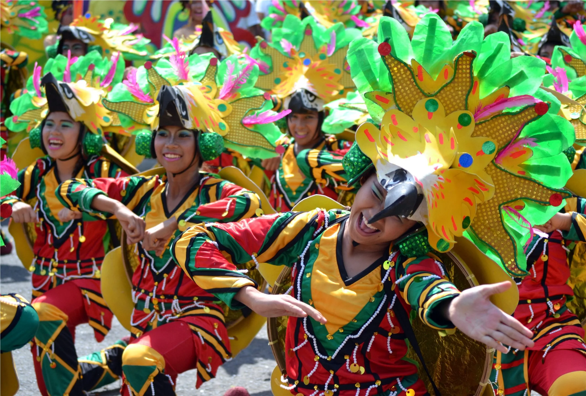

Interesting Facts About the IPs in the Philippines
Interesting Facts About the IPs in the Philippines
LUZON
The History Behind the Banaue Rice Terraces
Mountain rice terracing is practised widely in parts of the Asia-Pacific. Rice terraces are deeply intertwined with indigenous cultures, traditional practices and the ecology of many mountainous areas. One such collection of terraces under threat are the picturesque Ifugao Rice Terraces in the Philippines. These terraces are the ancestral domain of indigenous Ifugao peoples (recognized as including several subgroups such as the Banaue, Bunhran, Mayayao, Halipan, Hapao, and Kiangang). The Ifugao peoples are not only custodians of the forest and rice terraces, but also experts in harmoniously managing local ecosystems and natural resources. They mainly live at high elevations between 800 and 1,500 metres above sea level in the south, central and western areas of Ifuago province.
Located in a tropical rain forest zone rich in agrodiversity and fertile soils, the Ifugao rice terraces create an impressive landscape and provide good examples of water management. Unsurprisingly, they were listed as a UNESCO World Heritage site in 1995.
"We are capable of being educated" An Aeta once defied misconceptions about IPs by graduating from one of the country's most prestigious universities.
It’s what we teach our children at home that protects them for life. For Norman King, the first indigenous Aeta to graduate from one of the Philippines’ premier state universities, it was the small, impactful lessons imparted by his mother that helped him overcome hardship, discrimination and poverty.
It’s a distinction that the Aeta community around Mt. Pinatubo wears with pride. No other Aeta has been known to have graduated from the state university before King, who obtained a Bachelor of Science degree in behavioral sciences at UP Manila last month. King, 27, is as proud of his identity, describing himself as a “katutubong” (native) Aeta, in an interview at the family kitchen behind a small yard filled with metal boxes, rubber tires and wooden planks.
VISAYAS
Festivals that showcase their cultural identity
Iloilo is a junction over which Malay, Spanish, Chinese, American cultures met in the course of centuries. It has a colorful history that stretches back to a rich pre-colonial culture. Started in 2004, TUMANDOK is the longest and consistently-celebrated tourism month celebration of its kind in the region. The Tumandok tribe maybe known by others by only a few. They are known because of their Binanog dance, which mimics the fight of the Philippine Eagle. Accompanied by an amAgung ensemble. Tumandok will expose investment opportunities, introduce the rich traditions and cultural heritage of rural Iloilo, network and create partnership with stakeholders.
One of the famous culture we have is the festivals or feasts that we celebrate not just in one place but different parts of our country. An example of this is one of the famous feast, the Ati- Atihan festival that is held in aklan every january. The festival consists of tribal dance, music, accompanied by indigenous costumes and weapons, and parade along the street. That’s why it is famous.
MINDANAO
Celebrations that showcase their cultural identity

The festival’s name is derived from the Mandaya word “madayaw,” meaning treasured or valuable, as the locals use this time to give thanks for the season’s bountiful harvest. Back in the day, the ethnic tribes of Davao would come together to celebrate abundant crops, performing rituals that paid tribute to the nature gods.
They used to display fruits, vegetables, flowers, rice, and corn grains on their mats and at the front of their houses as a sign of respect for the great year they’ve had. They used to sing and dance as well, much like what they do today.
Historical Background
The identity of the Moro people is based, above all, on the profession of Islam, on an own institutional history linked to the sultanates, on a tradition of struggle against foreign, colonial domination —European or Philippine—, and on the defence of their right to land in the face of dispossession.
However, the Moro people is made up of at least 13 different ethnolinguistic groups, each one with its own identity and separate institutional tradition. The most remarkable differences are found between the groups on the island of Mindanao, on the one hand, and those in the Sulu Archipelago, on the other.
In addition, several non-Muslim indigenous peoples, collectively known as Lumad, live in Bangsamoro —as well as in the rest of Mindanao.
.jpg)